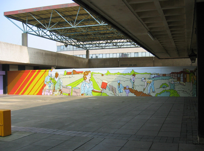
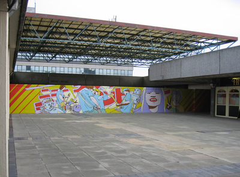

InSite Arts worked with Land Securities project team to appointed Grennan and Sperandio to develop a work for a long term hoarding around the former bus station within the Willow Place development. The artists created cartoon images of three Corby residents. The narratives sought to project their dreams and desires in life onto the town centre's hoardings.
The three iconic images appeared one after the other over a period of 12 months whilst the new Willow Place shopping centre during constructed. The artists selected three representative Corby residents for the work, entitled 'Street Dreams': Betty, who arrived from Edinburgh 45 years ago, Neil, a 15 year old aspiring indie star and a member of the young mums group on the Kingwood estate.


'The images emphasized the reinvigorated, aspirational aspects of life in Corby as exemplified by the massive regeneration process underway in the town. They will highlight the fact that we all have dreams and that, sometimes, dreams can come true! Three private dreams of Corby people will be made large, visible and arresting, inviting public reflection on our priorities and on the importance of fantasy, longing and pleasure in everyday life.' Sarah Collicott
 Photography:
the artist
Photography:
the artist